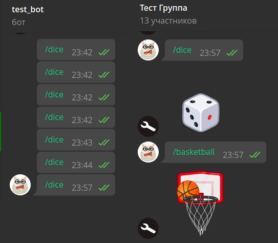
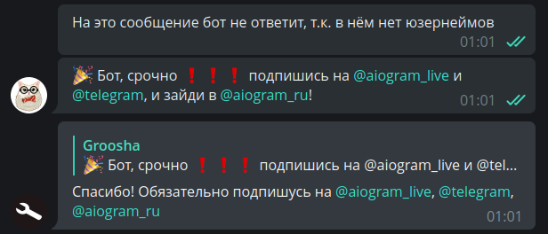
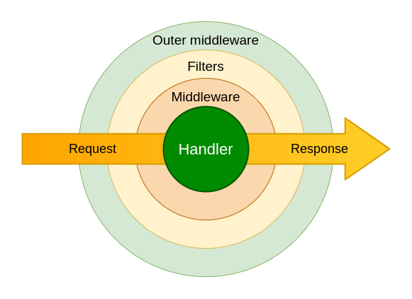

Фильтры и мидлвари¶
Используемая версия aiogram: 3.1.1
Настало время разобраться, как устроены фильтры и мидлвари в aiogram 3.x, а также познакомиться с «убийцей лямбда-выражений» фреймворка — магическими фильтрами.
Фильтры¶
Зачем нужны фильтры?¶
Если вы написали своего первого бота, то могу поздравить: вы уже пользовались фильтрами,
просто встроенными, а не собственными. Да-да, то самое Command("start") и есть фильтр. Они нужны для того,
чтобы очередной апдейт от телеги попал в нужный обработчик, т.е. туда, где его [апдейт] ждут.
Рассмотрим самый простой пример, чтобы понять важность фильтров. Пусть у нас есть пользователи Алиса с ID 111 и Боб с ID 777. И есть бот, который на любое текстовое сообщение радует наших двух ребят какой-нибудь мотивирующей фразой, а всех остальных отшивает:
from random import choice
@router.message(F.text)
async def my_text_handler(message: Message):
phrases = [
"Привет! Отлично выглядишь :)",
"Хэллоу, сегодня будет отличный день!",
"Здравствуй)) улыбнись :)"
]
if message.from_user.id in (111, 777):
await message.answer(choice(phrases))
else:
await message.answer("Я с тобой не разговариваю!")
Затем в какой-то момент мы решаем, что надо каждому из ребят сделать более персонализированное приветствие, а для этого разбиваем наш хэндлер на три: для Алисы, для Боба и для всех остальных:
@router.message(F.text)
async def greet_alice(message: Message):
# print("Хэндлер для Алисы")
phrases = [
"Привет, {name}. Ты сегодня красотка!",
"Ты самая умная, {name}",
]
if message.from_user.id == 111:
await message.answer(
choice(phrases).format(name="Алиса")
)
@router.message(F.text)
async def greet_bob(message: Message):
phrases = [
"Привет, {name}. Ты самый сильный!",
"Ты крут, {name}!",
]
if message.from_user.id == 777:
await message.answer(
choice(phrases).format(name="Боб")
)
@router.message(F.text)
async def stranger_go_away(message: Message):
if message.from_user.id not in (111, 777):
await message.answer("Я с тобой не разговариваю!")
При таком раскладе Алиса будет получать сообщения и радоваться. А вот все остальные не получат ничего, поскольку
код будет всегда попадать в функцию greet_alice(), и не проходить по условию if message.from_user.id == 111.
В этом легко убедиться, раскомментировав вызов print().
Но почему так? Ответ прост: любое текстовое сообщение сначала попадёт в проверку F.text над функцией
greet_alice(), эта проверка вернёт True и апдейт попадёт именно в эту функцию, откуда, не пройдя по внутреннему
условию if, выйдет и канет в Лету.
Чтобы избежать подобных казусов, существуют фильтры. В действительности правильной проверкой будет «текстовое сообщение И айди юзера 111». Тогда в случае, когда боту напишет Боб с айди 777, совокупность фильтров вернёт False, и роутер пойдёт проверять следующий хэндлер, где оба фильтра вернут True и апдейт упадёт в хэндлер. Возможно, на первый взгляд вышеописанное звучит очень сложно, но к концу этой главы вы поймёте, как правильно организовать подобную проверку.
Фильтры как классы¶
В отличие от aiogram 2.x, в «тройке» больше нет фильтра-класса ChatTypeFilter на конкретный тип чата (личка, группа, супергруппа или канал). Напишем его самостоятельно. Пусть у юзера будет возможность указать нужный тип либо строкой, либо списком (list). Последнее может пригодиться, когда нас интересуют одновременно несколько типов, например, группы и супергруппы.
Наша точка входа в приложение, а именно файл bot.py, выглядит знакомо:
import asyncio
from aiogram import Bot, Dispatcher
async def main():
bot = Bot(token="TOKEN")
dp = Dispatcher()
# Запускаем бота и пропускаем все накопленные входящие
# Да, этот метод можно вызвать даже если у вас поллинг
await bot.delete_webhook(drop_pending_updates=True)
await dp.start_polling(bot)
if __name__ == "__main__":
asyncio.run(main())
Рядом с ним создадим каталог filters, а в нём файл chat_type.py:
from typing import Union
from aiogram.filters import BaseFilter
from aiogram.types import Message
class ChatTypeFilter(BaseFilter): # [1]
def __init__(self, chat_type: Union[str, list]): # [2]
self.chat_type = chat_type
async def __call__(self, message: Message) -> bool: # [3]
if isinstance(self.chat_type, str):
return message.chat.type == self.chat_type
else:
return message.chat.type in self.chat_type
Обратим внимание на помеченные строки:
- Наши фильтры наследуются от базового класса
BaseFilter - В конструкторе класса можно задать будущие аргументы фильтра. В данном случае мы заявляем о наличии одного
аргумента
chat_type, который может быть как строкой (str), так и списком (list). - Всё действо происходит в методе
__call__(), который срабатывает, когда экземпляр классаChatTypeFilter()вызывают как функцию. Внутри ничего особенного: проверяем тип переданного объекта и вызываем соответствующую проверку. Мы стремимся к тому, чтобы фильтр вернул булево значение, поскольку далее выполнится только тот хэндлер, все фильтры которого вернулиTrue.
Теперь напишем пару хэндлеров, в которых по командам /dice и /basketball будем отправлять дайс
соответствующего типа, но только в группу. Создаём файл handlers/group_games.py и пишем элементарный код:
from aiogram import Router
from aiogram.enums.dice_emoji import DiceEmoji
from aiogram.types import Message
from aiogram.filters import Command
from filters.chat_type import ChatTypeFilter
router = Router()
@router.message(
ChatTypeFilter(chat_type=["group", "supergroup"]),
Command(commands=["dice"]),
)
async def cmd_dice_in_group(message: Message):
await message.answer_dice(emoji=DiceEmoji.DICE)
@router.message(
ChatTypeFilter(chat_type=["group", "supergroup"]),
Command(commands=["basketball"]),
)
async def cmd_basketball_in_group(message: Message):
await message.answer_dice(emoji=DiceEmoji.BASKETBALL)
Что ж, давайте разбираться.
Во-первых, мы импортировали встроенный фильтр Command и наш свеженаписанный
ChatTypeFilter.
Во-вторых, мы передали наш фильтр как позиционный аргумент в декоратор, указав
в качестве аргументов желаемые тип(ы) чатов.
В-третьих, в aiogram 2.x вы привыкли фильтровать команды как commands=..., однако в aiogram 3 этого больше нет,
и правильно будет использовать встроенные фильтры так же, как и свои, через импорт и вызов соответствующих классов.
Ровно это мы видим во втором декораторе с вызовом Command(commands="somecommand") или кратко: Command("somecommand")
Осталось импортировать файл с хэндлерами в точку входа и подключить новый роутер к диспетчеру (выделены новые строки):
import asyncio
from aiogram import Bot, Dispatcher
from handlers import group_games
async def main():
bot = Bot(token="TOKEN")
dp = Dispatcher()
dp.include_router(group_games.router)
# Запускаем бота и пропускаем все накопленные входящие
# Да, этот метод можно вызвать даже если у вас поллинг
await bot.delete_webhook(drop_pending_updates=True)
await dp.start_polling(bot)
if __name__ == "__main__":
asyncio.run(main())
Проверяем:

Вроде всё хорошо, но что, если у нас будет не 2 хэндлера, а 10? Придётся каждому указывать наш фильтр и нигде не забыть. К счастью, фильтры можно цеплять прямо на роутеры! В этом случае проверка будет выполнена ровно один раз, когда апдейт долетит до этого роутера. Это может быть полезно, если в фильтре вы делаете разные «тяжелые» задачи, типа обращения к Bot API; иначе можно легко словить флудвейт.
Так выглядит наш файл с хэндлерами для дайсов в окончательном виде:
from aiogram import Router
from aiogram.enums.dice_emoji import DiceEmoji
from aiogram.filters import Command
from aiogram.types import Message
from filters.chat_type import ChatTypeFilter
router = Router()
router.message.filter(
ChatTypeFilter(chat_type=["group", "supergroup"])
)
@router.message(Command("dice"))
async def cmd_dice_in_group(message: Message):
await message.answer_dice(emoji=DiceEmoji.DICE)
@router.message(Command("basketball"))
async def cmd_basketball_in_group(message: Message):
await message.answer_dice(emoji=DiceEmoji.BASKETBALL)
Вообще говоря, такой фильтр на тип чата можно сделать чуть иначе. Несмотря на то,
что типов чатов у нас четыре (ЛС, группа, супергруппа, канал), апдейт типа message
не может прилетать из каналов, т.к. у них свой апдейт channel_post. А когда мы
фильтруем группы, обычно всё равно, обычная группа или супергруппа, лишь бы не личка.
Таким образом, сам фильтр можно свести к условному ChatTypeFilter(is_group=True/False)
и просто проверять, ЛС или не ЛС. Конкретная реализация остаётся на усмотрение читателя.
Помимо True/False, фильтры могут что-то передавать в хэндлеры, прошедшие фильтр. Это может пригодиться, когда мы не хотим в хэндлере обрабатывать сообщение, поскольку уже это сделали в фильтре. Чтобы стало понятнее, напишем фильтр, который пропустит сообщение, если в нём есть юзернеймы, а заодно «протолкнёт» в хэндлеры найденные значения.
В каталоге filters создаём новый файл find_usernames.py:
from typing import Union, Dict, Any
from aiogram.filters import BaseFilter
from aiogram.types import Message
class HasUsernamesFilter(BaseFilter):
async def __call__(self, message: Message) -> Union[bool, Dict[str, Any]]:
# Если entities вообще нет, вернётся None,
# в этом случае считаем, что это пустой список
entities = message.entities or []
# Проверяем любые юзернеймы и извлекаем их из текста
# методом extract_from(). Подробнее см. главу
# про работу с сообщениями
found_usernames = [
item.extract_from(message.text) for item in entities
if item.type == "mention"
]
# Если юзернеймы есть, то "проталкиваем" их в хэндлер
# по имени "usernames"
if len(found_usernames) > 0:
return {"usernames": found_usernames}
# Если не нашли ни одного юзернейма, вернём False
return False
И создаём новый файл с хэндлером:
from typing import List
from aiogram import Router, F
from aiogram.types import Message
from filters.find_usernames import HasUsernamesFilter
router = Router()
@router.message(
F.text,
HasUsernamesFilter()
)
async def message_with_usernames(
message: Message,
usernames: List[str]
):
await message.reply(
f'Спасибо! Обязательно подпишусь на '
f'{", ".join(usernames)}'
)
В случае нахождения хотя бы одного юзернейма фильтр HasUsernamesFilter вернёт не просто True, а
словарь, где извлечённые юзернеймы будут лежать под ключом usernames. Соответственно, в хэндлере, на
который навешан этот фильтр, можно добавить аргумент с точно таким же названием в функцию-обработчик. Вуаля!
Теперь нет нужды ещё раз парсить всё сообщение и снова вытаскивать список юзернеймов:

Магические фильтры¶
После знакомства с ChatTypeFilter из предыдущего раздела, кто-то может воскликнуть:
«а зачем вообще так сложно, если можно просто лямбдой:
lambda m: m.chat.type in ("group", "supergroup")»? И вы правы! Действительно, для некоторых
простых случаев, когда нужно просто проверить значение поля объекта, создавать отдельный
файл с фильтром, потом его импортировать, смысла мало.
Алекс, основатель и главный разработчик aiogram, написал библиотеку
magic-filter, реализующую динамическое получение
значений атрибутов объектов (эдакий getattr на максималках). Более того, она уже поставляется вместе с aiogram 3.x.
Если вы установили себе «тройку», значит, у вас уже установлен magic-filter.
Библиотека magic-filter также доступна в PyPi и может использоваться отдельно от aiogram в других ваших проектах. При использовании библиотеки в aiogram вам будет доступна одна дополнительная фича, о которой речь пойдёт далее в этой главе
Довольно подробно возможности «магического фильтра» описаны в документации aiogram, здесь же мы остановимся на основных моментах.
Давайте вспомним, что такое «контент-тайп» сообщения. Такого понятия не существует в Bot API, но оно
есть и в pyTelegramBotAPI, и в aiogram. Идея простая: если в объекте
Message поле photo непустое (т.е. не равно None
в Python), значит, это сообщение содержит изображение, следовательно, считаем, что его
контент-тайп равен photo. И тамошний фильтр content_types="photo" будет ловить только такие сообщения,
избавляя разработчика от необходимости проверять этот атрибут внутри хэндлера.
Теперь нетрудно представить, что лямбда-выражение, которое на русском языке звучит как
«атрибут 'photo' у переданной переменной 'm' не должен быть равен None», на Python выглядит как
lambda m: m.photo is not None, или, чуть упростив, lambda m: m.photo. А сам m становится
тем объектом, кого мы фильтруем. Например, объект типа Message
Magic-filter предлагает аналогичную вещь. Для этого надо импортировать класс MagicFilter из aiogram,
но мы его импортируем не по полному имени, а по однобуквенному алиасу F:
from aiogram import F
# Здесь F - это message
@router.message(F.photo)
async def photo_msg(message: Message):
await message.answer("Это точно какое-то изображение!")
Вместо старого варианта ContentTypesFilter(content_types="photo") новый F.photo. Удобно! И теперь,
обладая таким сакральным знанием, мы легко можем заменить фильтр ChatTypeFilter на магию:
router.message.filter(F.chat.type.in_({"group", "supergroup"})).
Более того, даже проверку на контент-тайпы можно представить в виде магического фильтра:
F.content_type.in_({'text', 'sticker', 'photo'}) или F.photo | F.text | F.sticker.
Также стоит помнить, что фильтры можно вешать не только на обработку Message, но и на любые другие типы апдейтов: колбэки, инлайн-запросы, (my_)chat_member и другие.
Посмотрим на ту самую «эксклюзивную» фичу magic-filter в составе aiogram 3.x. Речь про
метод as_(<some text>), позволяющий получить результат фильтра в качестве аргумента хэндлера. Короткий
пример, чтобы стало понятно: у сообщений с фото эти изображения прилетают массивом, который обычно
отсортирован в порядке увеличения качества. Соответственно, можно сразу в хэндлер получить объект фотки
с максимальным размером:
from aiogram.types import Message, PhotoSize
@router.message(F.photo[-1].as_("largest_photo"))
async def forward_from_channel_handler(message: Message, largest_photo: PhotoSize) -> None:
print(largest_photo.width, largest_photo.height)
Пример посложнее. Если сообщение переслано от анонимных администраторов группы
или из какого-либо канала, то в объекте Message будет непустым поле forward_from_chat с объектом
типа Chat внутри. Вот как будет выглядеть пример, который сработает только если поле forward_from_chat
непустое, а в объекте Chat поле type будет равно channel (другими словами, отсекаем форварды от анонимных
админов, реагируя только на форварды из каналов):
from aiogram import F
from aiogram.types import Message, Chat
@router.message(F.forward_from_chat[F.type == "channel"].as_("channel"))
async def forwarded_from_channel(message: Message, channel: Chat):
await message.answer(f"This channel's ID is {channel.id}")
Ещё более сложный пример. При помощи magic-filter можно проверить элементы списка на соответствие какому-нибудь признаку:
from aiogram.enums import MessageEntityType
@router.message(F.entities[:].type == MessageEntityType.EMAIL)
async def all_emails(message: Message):
await message.answer("All entities are emails")
@router.message(F.entities[...].type == MessageEntityType.EMAIL)
async def any_emails(message: Message):
await message.answer("At least one email!")
MagicData¶
Наконец, слегка затронем MagicData. Этот фильтр позволяет подняться на уровень выше в плане фильтров, и оперировать значениями, которые передаются через мидлвари или в диспетчер/поллинг/вебхук. Предположим, у вас есть популярный бот. И вот настало время провести тех.обслуживание: забэкапить базу данных, почистить логи и т.д. Но при этом не хочется затыкать бота, чтобы не терять новую аудиторию: пусть он отвечает пользователям, мол, подождите немного.
Одно из возможных решений — сделать специальный роутер, который будет перехватывать сообщения, колбэки и др., если
каким-либо образом в бота передано булево значение maintenance_mode, равное True. Простенький однофайловый пример для
понимания этой логики доступен ниже:
import asyncio
import logging
import sys
from aiogram import Bot, Dispatcher, Router, F
from aiogram.filters import MagicData, CommandStart
from aiogram.types import Message, CallbackQuery
from aiogram.utils.keyboard import InlineKeyboardBuilder
# Создаём роутер для режима обслуживания и ставим ему фильтры на типы
maintenance_router = Router()
maintenance_router.message.filter(MagicData(F.maintenance_mode.is_(True)))
maintenance_router.callback_query.filter(MagicData(F.maintenance_mode.is_(True)))
regular_router = Router()
# Хэндлеры этого роутера перехватят все сообщения и колбэки,
# если maintenance_mode равен True
@maintenance_router.message()
async def any_message(message: Message):
await message.answer("Бот в режиме обслуживания. Пожалуйста, подождите.")
@maintenance_router.callback_query()
async def any_callback(callback: CallbackQuery):
await callback.answer(
text="Бот в режиме обслуживания. Пожалуйста, подождите",
show_alert=True
)
# Хэндлеры этого роутера используются ВНЕ режима обслуживания,
# т.е. когда maintenance_mode равен False или не указан вообще
@regular_router.message(CommandStart())
async def cmd_start(message: Message):
builder = InlineKeyboardBuilder()
builder.button(text="Нажми меня", callback_data="anything")
await message.answer(
text="Какой-то текст с кнопкой",
reply_markup=builder.as_markup()
)
@regular_router.callback_query(F.data == "anything")
async def callback_anything(callback: CallbackQuery):
await callback.answer(
text="Это какое-то обычное действие",
show_alert=True
)
async def main() -> None:
bot = Bot('1234567890:AaBbCcDdEeFfGrOoShAHhIiJjKkLlMmNnOo')
# В реальной жизни значение maintenance_mode
# будет взято из стороннего источника (например, конфиг или через API)
# Помните, что т.к. bool тип является иммутабельным,
# его смена в рантайме ни на что не повлияет
dp = Dispatcher(maintenance_mode=True)
# Maintenance-роутер должен быть первый
dp.include_routers(maintenance_router, regular_router)
await dp.start_polling(bot)
if __name__ == "__main__":
logging.basicConfig(level=logging.INFO, stream=sys.stdout)
asyncio.run(main())
Всего должно быть в меру
Magic-filter предоставляет довольно мощный инструмент для фильтрации и порой позволяет компактно описать сложную логику, но это не панацея и не универсальное средство. Если вы не можете сходу написать красивый магический фильтр, не нужно переживать; просто сделайте класс-фильтр. Никто вас за это не осудит.
Мидлвари¶
Зачем нужны мидлвари?¶
Представьте, что вы пришли в ночной клуб с какой-то целью (послушать музыку, выпить коктейль, познакомиться с новыми людьми). А на входе стоит охранник. Он может вас просто пропустить, может проверить паспорт и принять решение, зайдёте вы или нет, может выдать бумажный браслет, чтобы потом отличать настоящих гостей от случайно заблудших, а может вообще не пустить, отправив домой.
В терминологии aiogram вы — это апдейт, ночной клуб — набор хэндлеров, а охранник на входе — мидлварь. Задача последнего вклиниваться в процесс обработки апдейтов для реализации какой-либо логики. Возвращаясь к примеру выше, что можно делать внутри мидлварей?
- логировать события;
- передавать в хэндлеры какие-то объекты (например, сессию базы данных из пула сессий);
- подменять обработку апдейтов, не доводя до хэндлеров;
- по-тихому пропускать апдейты, как будто их и не было;
- ... что угодно ещё!
Виды и структура мидлварей¶
Давайте снова обратимся к документации aiogram 3.x, но уже в другом разделе и посмотрим на следующее изображение:

Оказывается, мидлварей два вида: внешние (outer) и внутренние (inner или просто «мидлвари»). В чём разница? Outer выполняются до начала проверки фильтрами, а inner — после. На практике это значит, что сообщение/колбэк/инлайн-запрос, проходящий через outer-мидлварь, может так ни в один хэндлер и не попасть, но если он попал в inner, то дальше 100% будет какой-то хэндлер.
Мидлвари на тип Update
Стоит напомнить, что Update — это общий тип для всех видов событий в Telegram. И с ним связаны две важных особенности в
плане их обработки aiogram-ом:
• Inner-мидлварь на Update вызывается всегда (т.е. в этом случае нет разницы между Outer и Inner).
• Мидлвари на Update можно вешать только на диспетчер (корневой роутер).
Рассмотрим простейшую мидлварь:
1 2 3 4 5 6 7 8 9 10 11 12 13 14 15 | |
Каждая мидлварь, построенная на классах (мы не будем рассматривать
иные варианты), должна реализовывать
метод __call__() с тремя аргументами:
- handler — собственно, объект хэндлера, который будет выполнен. Имеет смысл только для inner-мидлварей, т.к. outer-мидлварь ещё не знает, в какой хэндлер попадёт апдейт.
- event — тип Telegram-объекта, который обрабатываем. Обычно это Update, Message, CallbackQuery или InlineQuery
(но не только). Если точно знаете, какого типа объекты обрабатываете, смело пишите, например,
MessageвместоTelegramObject. - data — связанные с текущим апдейтом данные: FSM, переданные доп. поля из фильтров, флаги (о них позже) и т.д.
В этот же
dataмы можем класть из мидлварей какие-то свои данные, которые будут доступны в виде аргументов в хэндлерах (так же, как в фильтрах).
С телом функции ещё интереснее.
- Всё, что вы напишете ДО 13-й строки, будет выполнено до передачи управления нижестоящему обработчику (это может быть другая мидлварь или непосредственно хэндлер).
- Всё, что вы напишете ПОСЛЕ 13-й строки, будет выполнено уже после выхода из нижестоящего обработчика.
- Если вы хотите, чтобы обработка продолжилась, вы ОБЯЗАНЫ вызвать
await handler(event, data). Если хотите «дропнуть» апдейт, просто не вызывайте его. - Если вам не нужно получать данные из хэндлера, то последней строкой функции поставьте
return await handler(event, data). Если не вернутьawait handler(event, data)(неявныйreturn None), то апдейт будет считаться «дропнутым».
Все привычные нам объекты (Message, CallbackQuery и т.д.) являются апдейтами (Update), поэтому для Message сначала
выполнятся мидлвари для Update, а уже затем для самого Message. Оставим на месте наши print() из примера выше и
проследим, как будут выполняться мидлвари, если мы зарегистрируем по одной outer- и inner-мидлвари для типов
Update и Message.
Если сообщение (Message) в конечном счёте обработалось каким-то хэндлером:
[Update Outer] Before handler[Update Inner] Before handler[Message Outer] Before handler[Message Inner] Before handler[Message Inner] After handler[Message Outer] After handler[Update Inner] After handler[Update Outer] After handler
Если сообщение не нашло нужный хэндлер:
[Update Outer] Before handler[Update Inner] Before handler[Message Outer] Before handler[Message Outer] After handler[Update Inner] After handler[Update Outer] After handler
Баним пользователей в боте
Очень часто в группах по Telegram-ботам задают один и тот же вопрос: «а как банить пользователя в боте, чтобы
тот не мог боту писать?». Скорее всего, лучшим местом для этого будет outer-мидлварь на Update, как самый ранний
этап обработки запроса юзера. Более того, одна из встроенных в aiogram мидлварей кладёт в data словарик
с информацией о пользователе по ключу event_from_user. Далее вы можете достать оттуда ID юзера, сравнить с
каким-нибудь своим «списком заблокированных» и просто сделать return, чтобы предотвратить дальнейшую обработку
по цепочке.
Примеры мидлварей¶
Рассмотрим несколько примеров мидлварей.
Передача аргументов в мидлварь¶
Мы используем мидлвари-классы, соответственно, у них есть конструктор. Это позволяет кастомизировать поведение кода внутри, управляя им снаружи. Например, из файла конфигурации. Напишем бесполезную, но наглядную "замедляющую" мидлварь, которая будет тормозить обработку входящих сообщений на указанное количество секунд:
import asyncio
from typing import Any, Callable, Dict, Awaitable
from aiogram import BaseMiddleware
from aiogram.types import TelegramObject
class SlowpokeMiddleware(BaseMiddleware):
def __init__(self, sleep_sec: int):
self.sleep_sec = sleep_sec
async def __call__(
self,
handler: Callable[[TelegramObject, Dict[str, Any]], Awaitable[Any]],
event: TelegramObject,
data: Dict[str, Any],
) -> Any:
# Ждём указанное количество секунд и передаём управление дальше по цепочке
# (это может быть как хэндлер, так и следующая мидлварь)
await asyncio.sleep(self.sleep_sec)
result = await handler(event, data)
# Если в хэндлере сделать return, то это значение попадёт в result
print(f"Handler was delayed by {self.sleep_sec} seconds")
return result
И теперь повесим её на два роутера с разными значениями:
from aiogram import Router
from <...> import SlowpokeMiddleware
# Где-то в другом месте
router1 = Router()
router2 = Router()
router1.message.middleware(SlowpokeMiddleware(sleep_sec=5))
router2.message.middleware(SlowpokeMiddleware(sleep_sec=10))
Передача данных из мидлвари¶
Как мы уже выяснили ранее, при обработке очередного апдейта мидлварям доступен словарь data,
в котором лежат различные полезные объекты: бот, автор апдейта (event_from_user) и т.д. Но также мы можем наполнять этот
словарь чем угодно. Более того, позднее вызванные мидлвари могут видеть то, что туда положили ранее вызванные.
Рассмотрим следующую ситуацию: первая мидлварь по Telegram ID юзера получает какой-то внутренний айдишник (например, из якобы стороннего сервиса), а вторая мидлварь по этому внутреннему айди вычисляет «счастливый месяц» пользователя (остаток от деления внутреннего айди на 12). Всё это кладётся в хэндлер, который радует или огорчает человека, вызвавшего команду. Звучит сложно, но сейчас всё поймёте. Начнём с мидлварей:
from random import randint
from typing import Any, Callable, Dict, Awaitable
from datetime import datetime
from aiogram import BaseMiddleware
from aiogram.types import TelegramObject
# Мидлварь, которая достаёт внутренний айди юзера из какого-то стороннего сервиса
class UserInternalIdMiddleware(BaseMiddleware):
# Разумеется, никакого сервиса у нас в примере нет,
# а только суровый рандом:
def get_internal_id(self, user_id: int) -> int:
return randint(100_000_000, 900_000_000) + user_id
async def __call__(
self,
handler: Callable[[TelegramObject, Dict[str, Any]], Awaitable[Any]],
event: TelegramObject,
data: Dict[str, Any],
) -> Any:
user = data["event_from_user"]
data["internal_id"] = self.get_internal_id(user.id)
return await handler(event, data)
# Мидлварь, которая вычисляет "счастливый месяц" пользователя
class HappyMonthMiddleware(BaseMiddleware):
async def __call__(
self,
handler: Callable[[TelegramObject, Dict[str, Any]], Awaitable[Any]],
event: TelegramObject,
data: Dict[str, Any],
) -> Any:
# Получаем значение из предыдущей мидлвари
internal_id: int = data["internal_id"]
current_month: int = datetime.now().month
is_happy_month: bool = (internal_id % 12) == current_month
# Кладём True или False в data, чтобы забрать в хэндлере
data["is_happy_month"] = is_happy_month
return await handler(event, data)
Теперь напишем хэндлер, положим его в роутер и прицепим роутер к диспетчеру. Первую мидлварь повесим как outer на диспетчер, потому что (по задумке) этот внутренний айди нужен всегда и везде. А вторую мидлварь повесим как inner на конкретный роутер, поскольку вычисление счастливого месяца нужно только в нём.
@router.message(Command("happymonth"))
async def cmd_happymonth(
message: Message,
internal_id: int,
is_happy_month: bool
):
phrases = [f"Ваш ID в нашем сервисе: {internal_id}"]
if is_happy_month:
phrases.append("Сейчас ваш счастливый месяц!")
else:
phrases.append("В этом месяце будьте осторожнее...")
await message.answer(". ".join(phrases))
# Где-то в другом месте:
async def main():
dp = Dispatcher()
# <...>
dp.update.outer_middleware(UserInternalIdMiddleware())
router.message.middleware(HappyMonthMiddleware())
Вот какие результаты получились в ноябре (11-й месяц):

Никаких колбэков по выходным!¶
Представим, что у некоторого завода есть Telegram-бот и каждое утро заводчане должны нажимать на инлайн-кнопку, чтобы подтвердить своё наличие и дееспособность. Завод работает 5/2 и мы хотим, чтобы в субботу и воскресенье нажатия не учитывались. Поскольку на нажатие на кнопку завязана сложная логика (отправка данных в СКД), то в выходные будем просто «дропать» апдейт и выводить окошко с ошибкой. Следующий пример можно скопировать целиком и запустить:
import asyncio
import logging
import sys
from datetime import datetime
from typing import Any, Callable, Dict, Awaitable
from aiogram import Bot, Dispatcher, Router, BaseMiddleware, F
from aiogram.filters import Command
from aiogram.types import Message, CallbackQuery, TelegramObject
from aiogram.utils.keyboard import InlineKeyboardBuilder
router = Router()
# Это будет outer-мидлварь на любые колбэки
class WeekendCallbackMiddleware(BaseMiddleware):
def is_weekend(self) -> bool:
# 5 - суббота, 6 - воскресенье
return datetime.utcnow().weekday() in (5, 6)
async def __call__(
self,
handler: Callable[[TelegramObject, Dict[str, Any]], Awaitable[Any]],
event: TelegramObject,
data: Dict[str, Any]
) -> Any:
# Можно подстраховаться и игнорировать мидлварь,
# если она установлена по ошибке НЕ на колбэки
if not isinstance(event, CallbackQuery):
# тут как-нибудь залогировать
return await handler(event, data)
# Если сегодня не суббота и не воскресенье,
# то продолжаем обработку.
if not self.is_weekend():
return await handler(event, data)
# В противном случае отвечаем на колбэк самостоятельно
# и прекращаем дальнейшую обработку
await event.answer(
"Какая работа? Завод остановлен до понедельника!",
show_alert=True
)
return
@router.message(Command("checkin"))
async def cmd_checkin(message: Message):
builder = InlineKeyboardBuilder()
builder.button(text="Я на работе!", callback_data="checkin")
await message.answer(
text="Нажимайте эту кнопку только по будним дням!",
reply_markup=builder.as_markup()
)
@router.callback_query(F.data == "checkin")
async def callback_checkin(callback: CallbackQuery):
# Тут много сложного кода
await callback.answer(
text="Спасибо, что подтвердили своё присутствие!",
show_alert=True
)
async def main() -> None:
bot = Bot('1234567890:AaBbCcDdEeFfGrOoShAHhIiJjKkLlMmNnOo')
dp = Dispatcher()
dp.callback_query.outer_middleware(WeekendCallbackMiddleware())
dp.include_router(router)
await dp.start_polling(bot)
if __name__ == "__main__":
logging.basicConfig(level=logging.INFO, stream=sys.stdout)
asyncio.run(main())
Теперь, если немного побаловаться с перемещениями во времени, можно увидеть, что по будним дням бот отвечает нормально, а по выходным выводит ошибку.
Флаги¶
Ещё одна интересная фича aiogram 3.x — флаги. По сути, это некие «маркеры» хэндлеров, которые можно читать в мидлварях и не только. С помощью флагов можно пометить хэндлеры, не влезая в их внутреннюю структуру, чтобы затем что-то сделать в мидлварях, например, троттлинг.
Рассмотрим немного изменённый код
из документации. Предположим,
в вашем боте много хэндлеров, которые занимаются отправкой медиафайлов или подготовкой текста для последующей
отправки. Если такие действия выполняются долго, то хорошим тоном считается показать статус печатает
или отправляет фото при помощи метода sendChatAction.
По умолчанию, такое событие отправляется всего на 5 секунд, но автоматически закончится, если сообщение
будет отправлено раньше. У aiogram есть вспомогательный класс ChatActionSender, который позволяет отправлять
выбранный статус до тех пор, пока не выполнится отправка сообщения.
Мы также не хотим внутрь каждого хэндлера запихивать работу с ChatActionSender, пусть это делает мидлварь с теми
хэндлерами, у которых выставлен флаг long_operation со значением статуса (например, typing, choose_sticker...).
А вот и сама мидлварь:
from aiogram.dispatcher.flags import get_flag
from aiogram.utils.chat_action import ChatActionSender
class ChatActionMiddleware(BaseMiddleware):
async def __call__(
self,
handler: Callable[[Message, Dict[str, Any]], Awaitable[Any]],
event: Message,
data: Dict[str, Any]
) -> Any:
long_operation_type = get_flag(data, "long_operation")
# Если такого флага на хэндлере нет
if not long_operation_type:
return await handler(event, data)
# Если флаг есть
async with ChatActionSender(
action=long_operation_type,
chat_id=event.chat.id
):
return await handler(event, data)
Соответственно, чтобы флаг был прочитан, его надо где-то указать.
Вариант: @dp.message(<тут ваши фильтры>, flags={"long_operation": "upload_video_note"})
Пример throttling-мидлвари можно увидеть в моём казино-боте.